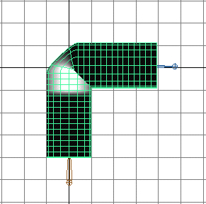
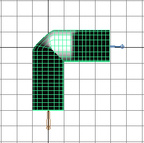
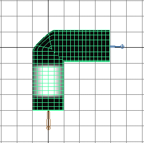
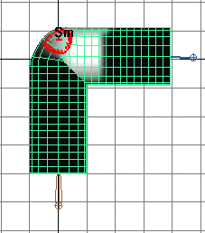

绘制刚性蒙皮点集成员身份
- 选择刚性蒙皮对象。
- 转到平滑着色处理模式（热键：按 5）。
- 选择“变形 > (绘制权重)集成员身份工具”(Deform > (Paint Weights) Set Membership Tool) >
 。
。 - 在“集成员身份”(Set Membership)框中，选择具有要编辑的点成员身份的关节集。
- 使用笔刷添加、传递或移除集成员身份。
绘制拆痕效果
- 选择平滑着色处理显示模式（热键：按 5 键）。
- 选择圆柱体。
- 选择“变形 > (绘制权重)簇”(Deform > (Paint Weights) Cluster) > 。
在“工具设置”(Tool Settings)窗口的“绘制属性”(Paint Attributes)区域中，请注意 joint1Cluster1.weights 按钮。
- 选择刚性蒙皮点簇。例如，cluster-joint3Cluster1 > 权重。 
- 选择另一个刚性蒙皮点簇。例如，选择 cluster-joint4Cluster1 > 权重。 
- 检查另一个刚性蒙皮点簇。例如，检查 cluster-joint2Cluster1。 
- 使用“绘制簇权重工具”(Paint Cluster Weights Tool)的笔刷平滑变形效果。
